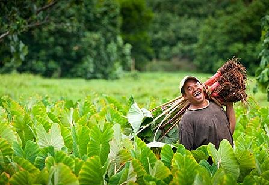

Day at market
Answers To Your Questions
Q. Where in the world is the Cook Islands? - A. The 15 volcanic islands of the Cook Islands are scattered over 770,000 square miles of the South Pacific,and is located east of American Samoa and to the west of French Polynesia.
There are islands that are not spoilt and have their original beauty. Those who are interested in exploring caves might also be interested to come and visit. Mangaia, my home island, the southernmost island in the Cook Islands is the oldest island in the South Pacific. In Mangaia, there is a cave called Te Rua Rere, where no one has reached the end, and a pit (endless pit) where no one has reached the bottom. A few people have tried, but have ran out of rope and still could not see the bottom. So, if you are up for the challenge, come visit us. I myself have explored this cave and have gone as far as the endless pit.ß